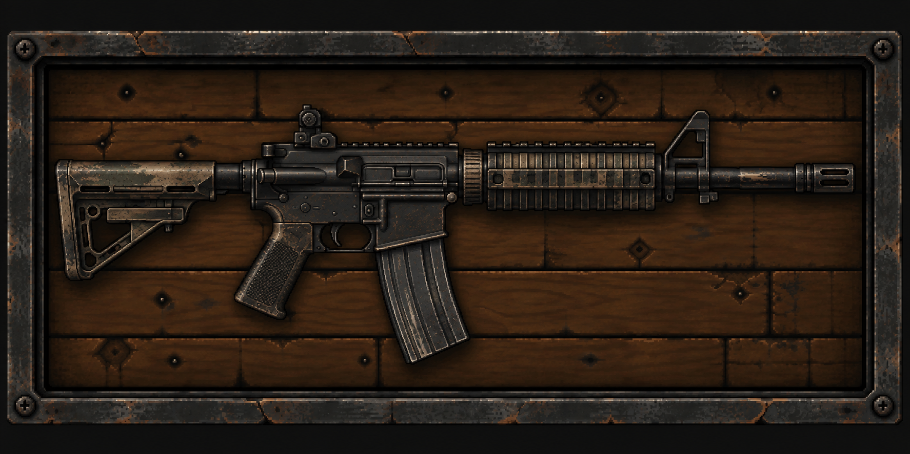

M4
Одна из самых узнаваемых винтовок своего поколения. Компактный размер, удобство и распространённый 5.56×45-мм патрон сделали её привычным оружием для военных и силовых подразделений.
После начала эпидемии найти M4 всё ещё можно в самых разных местах. Главное — знать, где искать.
TYPEASSAULT RIFLE
CALIBER5.56×45 MM
MAGAZINE30 ROUNDS
ORIGINUSA
DEFAULT
Оружие уже было в употреблении. Есть небольшие царапины и следы эксплуатации, но оно всё ещё исправно.